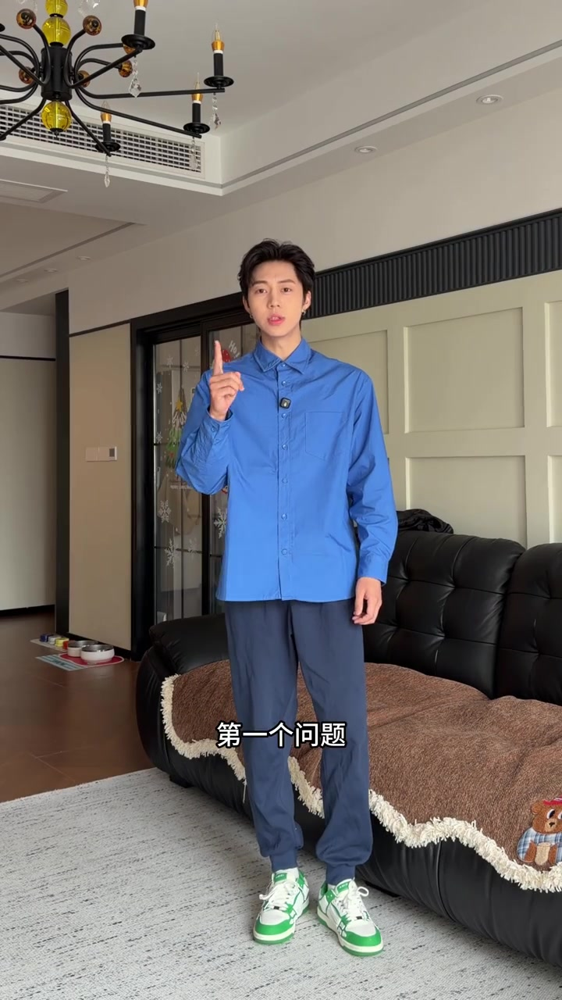
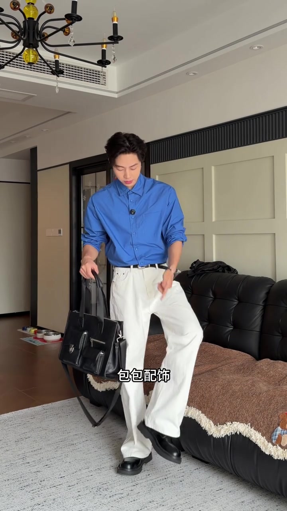
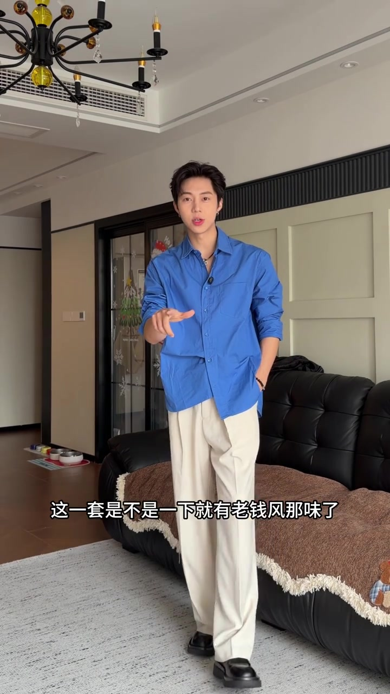
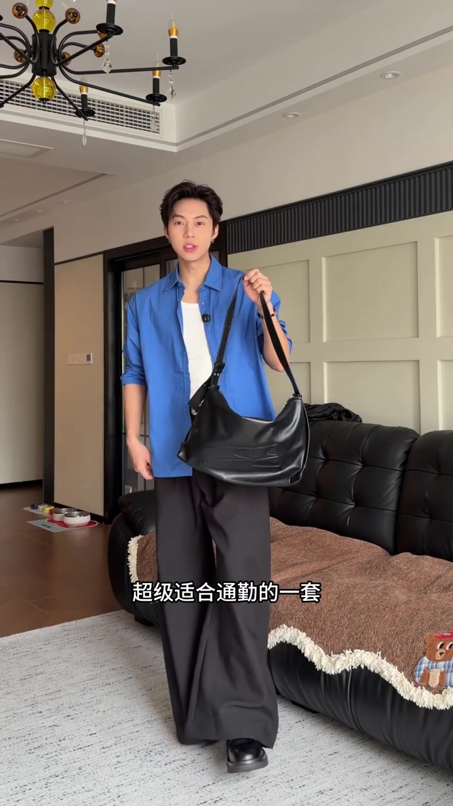
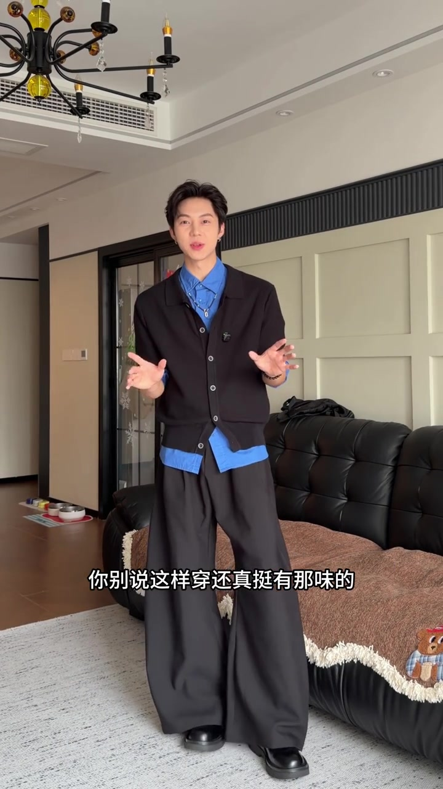
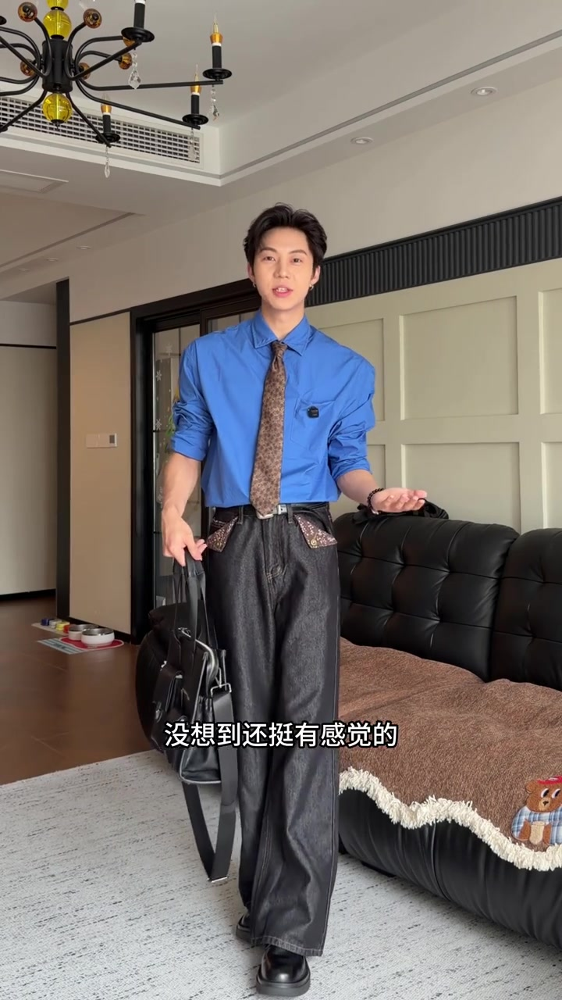
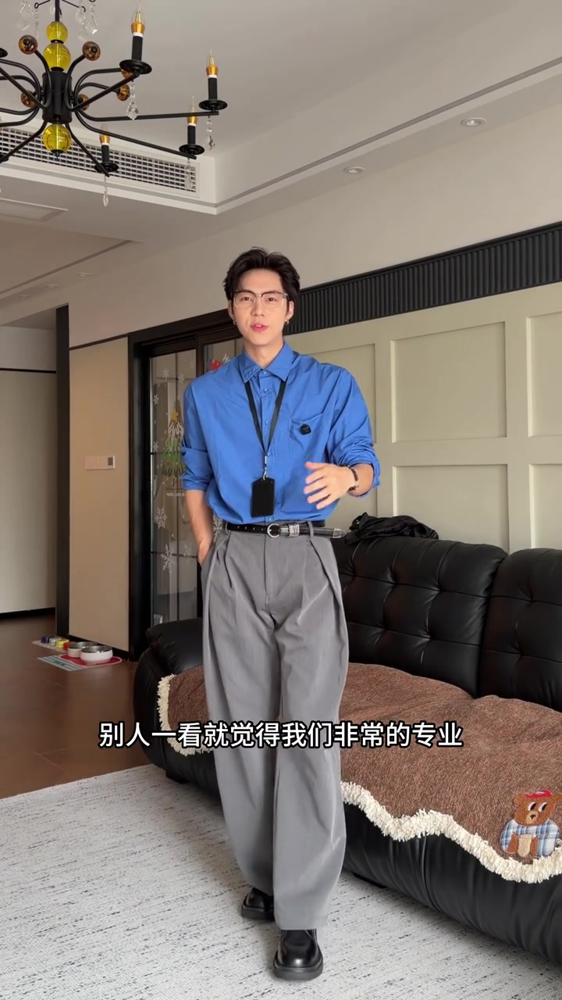
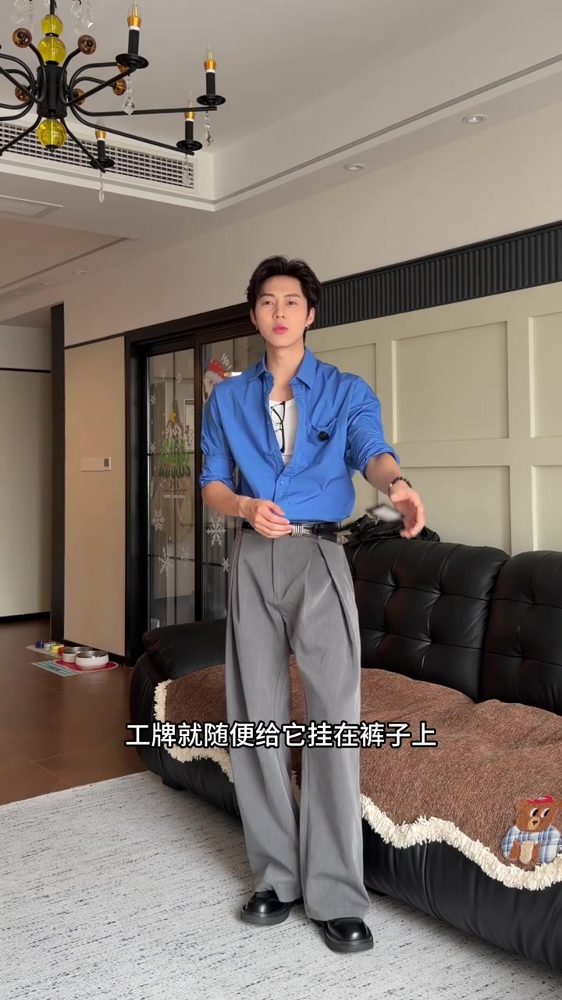

先把“蓝衬衫为什么穿呆了”摊开
视频没有从成套公式讲起，而是先让博主穿上一套蓝灰配色：衬衫扣得规整，搭运动鞋，整体颜色接近却缺少明显层次。他把问题归为两类：一是材质和颜色没有选对，二是穿法太拘谨。

Whisper 把少量词识别成“场服”“吐气”等。下文涉及造型名称时，以可见画面和视频字幕为辅助；页面末尾的转录仍原样保留识别结果。
先提亮，再给“不塞衣角”一个答案
第一套换成白色牛仔裤。蓝白对比一下拉开明度，衬衫塞进裤腰、袖口卷起，黑腰带标出腰线；包、皮鞋与腰带统一成黑色，细节开始彼此呼应。视频把它作为“稍微改变就会好很多”的直观例子。
紧接着，博主回应“不喜欢把衬衫塞进裤子里”的情况：换米色西裤，衬衫下摆用错位扣法收出不对称轮廓。画面字幕称这套带出“老钱风”气质。


黑色会压暗，就留一条白色呼吸带
黑色下装容易让整套变闷，视频的处理是把蓝衬衫敞开，露出白背心，再加黑色肩包。黑、白、蓝三块颜色层层展开，博主把这套定位为通勤。
天气降温的版本则继续做叠穿：画面中黑色短袖针织衫罩在蓝衬衫外，蓝色领口和下摆仍露出来，下装保持黑色，颜色没有增多，但层次改变了。


领带与牛仔裤，把注意力移到复古细节
下一次变化不再靠黑白灰大色块，而是加入花纹领带和深色宽腿牛仔裤。领带花纹与腰间露出的花纹细节形成呼应，蓝衬衫依旧是底色，视觉焦点却转到了小面积图案。

同一条灰西裤，从上班切到下班
最后一组先把蓝衬衫塞进灰色西裤，再戴半框眼镜、挂工牌，做成博主口中的“专业”通勤形象。这里的正式感主要来自规整腰线与可识别的办公配饰，是视频中的个人风格判断。
下班后，他拿掉眼镜和工牌，解开大部分衬衫扣，只留下靠下两颗；眼镜挂在胸前，工牌改挂裤侧。内搭重新露出，原本规整的轮廓放松下来。视频就用这次不换主单品的小改动收尾。

